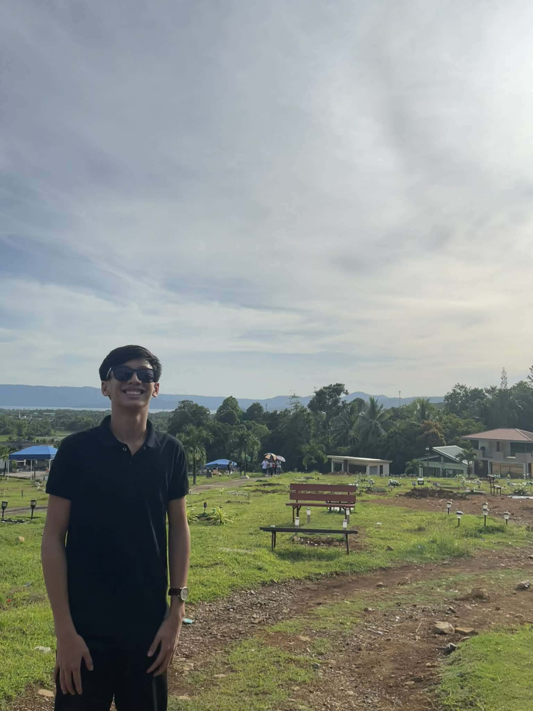

By Jabril Brasileño
Welcome to my webpage! This website shows my journey in school from my first day until today. It includes my experiences, challenges, achievements, and lessons learned throughout the school year.

Hello! My name is Jabril Brasileño. I am a student who believes that education is important for building a better future. I enjoy learning new things, improving my skills, and facing challenges that help me grow.
On my first day of school, I felt nervous but excited. As the school year continued, I made new friends, participated in activities, and learned different subjects that improved my knowledge and skills.
Some subjects were difficult for me, especially when lessons became more advanced. There were times when I felt tired and stressed because of projects and deadlines. However, I learned how to manage my time better.
I am proud of completing my projects, improving my grades, and becoming more confident in class. Finishing tasks on time and understanding difficult lessons were big achievements for me.
This school year taught me the importance of discipline, patience, and perseverance. I learned that challenges help me grow stronger and that success comes from hard work and determination.